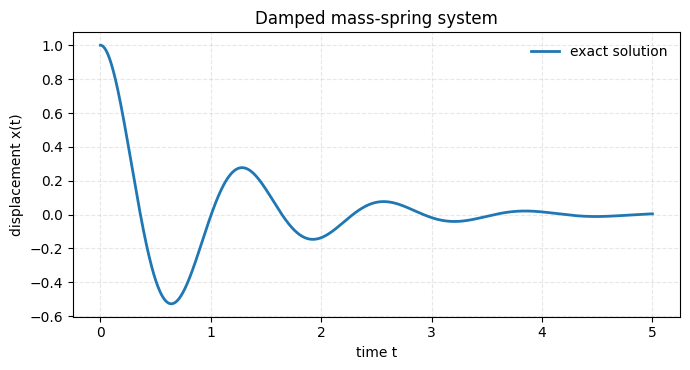
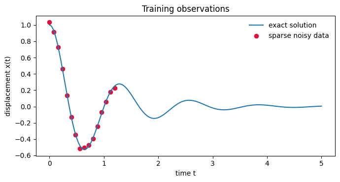
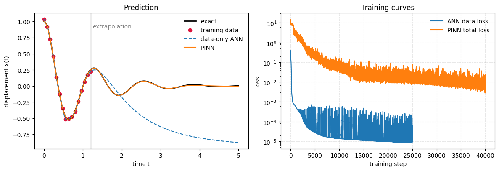

%pip install torch numpy matplotlibPhysics-informed neural network for a damped mass-spring system
This notebook implements a first PINN in PyTorch. The model learns the solution of
\[ x''(t)+2\zeta\omega_n x'(t)+\omega_n^2 x(t)=0, \]
with initial conditions \(x(0)=x_0\) and \(x'(0)=v_0\).
The practical goals are:
- compare a data-only neural network with a PINN,
- compute derivatives using
torch.autograd, - build a physics residual loss,
- optionally learn an unknown physical parameter.
Requirements
Run this cell if PyTorch or plotting libraries are not installed.
from pathlib import Path
import numpy as np
import matplotlib.pyplot as plt
import torch
from torch import nn
FIG_DIR = Path('figs/pinns')
FIG_DIR.mkdir(parents=True, exist_ok=True)
device = 'cuda' if torch.cuda.is_available() else 'cpu'
torch.manual_seed(7)
np.random.seed(7)
print(device)cpuExact damped oscillator solution
We use the exact solution only for evaluation and plotting. The PINN itself will be trained from initial conditions, sparse observations, and the ODE residual.
x0 = 1.0
v0 = 0.0
wn = 5.0
zeta = 0.2
T = 5.0
def exact_solution(t, x0=x0, v0=v0, wn=wn, zeta=zeta):
wd = wn * np.sqrt(1 - zeta**2)
return np.exp(-zeta * wn * t) * (
x0 * np.cos(wd * t) + (v0 + zeta * wn * x0) / wd * np.sin(wd * t)
)
t_np = np.linspace(0, T, 800)
x_np = exact_solution(t_np)
plt.figure(figsize=(7, 3.8))
plt.plot(t_np, x_np, lw=2, label='exact solution')
plt.xlabel('time t')
plt.ylabel('displacement x(t)')
plt.title('Damped mass-spring system')
plt.grid(True, linestyle='--', alpha=0.3)
plt.legend(frameon=False)
plt.tight_layout()
plt.savefig(FIG_DIR / 'notebook_mass_spring_exact.png', dpi=300)
plt.show()
Sparse observations
A data-only network will only see a few early measurements. This makes extrapolation hard.
n_data = 16
t_data_np = np.linspace(0, 1.2, n_data)
x_data_np = exact_solution(t_data_np) + 0.02 * np.random.randn(n_data)
t_data = torch.tensor(t_data_np, dtype=torch.float32, device=device).view(-1, 1)
x_data = torch.tensor(x_data_np, dtype=torch.float32, device=device).view(-1, 1)
t_eval = torch.tensor(t_np, dtype=torch.float32, device=device).view(-1, 1)
x_eval = torch.tensor(x_np, dtype=torch.float32, device=device).view(-1, 1)
plt.figure(figsize=(7, 3.8))
plt.plot(t_np, x_np, label='exact solution')
plt.scatter(t_data_np, x_data_np, color='crimson', label='sparse noisy data')
plt.xlabel('time t')
plt.ylabel('displacement x(t)')
plt.title('Training observations')
plt.legend(frameon=False)
plt.tight_layout()
plt.savefig(FIG_DIR / 'notebook_mass_spring_sparse_data.png', dpi=300)
plt.show()
Neural network surrogate
Both the data-only ANN and the PINN use the same architecture. The difference is the loss function.
class MLP(nn.Module):
def __init__(self, width=32, depth=3):
super().__init__()
layers = [nn.Linear(1, width), nn.Tanh()]
for _ in range(depth - 1):
layers += [nn.Linear(width, width), nn.Tanh()]
layers += [nn.Linear(width, 1)]
self.net = nn.Sequential(*layers)
self.apply(self._init)
def _init(self, module):
if isinstance(module, nn.Linear):
nn.init.xavier_normal_(module.weight)
nn.init.zeros_(module.bias)
def forward(self, t):
return self.net(t)
def rel_l2(pred, target):
return (torch.linalg.norm(pred - target) / torch.linalg.norm(target)).item()
def grad(y, x):
return torch.autograd.grad(
y, x,
grad_outputs=torch.ones_like(y),
create_graph=True
)[0]Baseline: data-only ANN
This model minimizes only the observed-data mean squared error.
def train_data_only(model, steps=25000, lr=1e-3):
opt = torch.optim.Adam(model.parameters(), lr=lr)
history = []
for step in range(steps):
pred = model(t_data)
loss = torch.mean((pred - x_data) ** 2)
opt.zero_grad()
loss.backward()
opt.step()
history.append(loss.item())
return np.array(history)
ann = MLP().to(device)
ann_history = train_data_only(ann)
with torch.no_grad():
ann_pred = ann(t_eval)
print('ANN relative L2 error:', rel_l2(ann_pred, x_eval))ANN relative L2 error: 2.2483582496643066PINN loss
The PINN loss combines data fit, initial conditions, and the ODE residual:
\[ f_\theta(t)=x_\theta''(t)+2\zeta\omega_nx_\theta'(t)+\omega_n^2x_\theta(t). \]
def pinn_loss(model, t_phys, w_data=1.0, w_ic=10.0, w_phys=1.0):
# data loss
x_pred_data = model(t_data)
data_loss = torch.mean((x_pred_data - x_data) ** 2)
# initial condition loss
t0 = torch.zeros(1, 1, device=device, requires_grad=True)
x0_pred = model(t0)
dx0_pred = grad(x0_pred, t0)
ic_loss = (x0_pred - x0).pow(2).mean() + (dx0_pred - v0).pow(2).mean()
# physics residual loss
t_phys = t_phys.clone().detach().requires_grad_(True)
x_pred = model(t_phys)
dx_dt = grad(x_pred, t_phys)
d2x_dt2 = grad(dx_dt, t_phys)
residual = d2x_dt2 + 2 * zeta * wn * dx_dt + wn**2 * x_pred
phys_loss = torch.mean(residual ** 2)
total = w_data * data_loss + w_ic * ic_loss + w_phys * phys_loss
return total, {'data': data_loss.item(), 'ic': ic_loss.item(), 'phys': phys_loss.item()}
def train_pinn(model, steps=40000, lr=1e-3, n_phys=128):
opt = torch.optim.Adam(model.parameters(), lr=lr)
history = []
terms = []
for step in range(steps):
t_phys = T * torch.rand(n_phys, 1, device=device)
loss, info = pinn_loss(model, t_phys)
opt.zero_grad()
loss.backward()
opt.step()
history.append(loss.item())
terms.append(info)
return np.array(history), termsTrain the PINN
pinn = MLP().to(device)
pinn_history, pinn_terms = train_pinn(pinn)
with torch.no_grad():
pinn_pred = pinn(t_eval)
print('PINN relative L2 error:', rel_l2(pinn_pred, x_eval))PINN relative L2 error: 0.018757937476038933Compare ANN and PINN
ann_np = ann_pred.detach().cpu().numpy().ravel()
pinn_np = pinn_pred.detach().cpu().numpy().ravel()
fig, axes = plt.subplots(1, 2, figsize=(12, 4.2))
axes[0].plot(t_np, x_np, color='black', lw=2, label='exact')
axes[0].scatter(t_data_np, x_data_np, color='crimson', s=35, label='training data')
axes[0].plot(t_np, ann_np, '--', label='data-only ANN')
axes[0].plot(t_np, pinn_np, label='PINN')
axes[0].axvline(t_data_np.max(), color='gray', lw=1, alpha=0.7)
axes[0].text(t_data_np.max()+0.05, 0.9, 'extrapolation', color='gray')
axes[0].set_xlabel('time t')
axes[0].set_ylabel('displacement x(t)')
axes[0].set_title('Prediction')
axes[0].legend(frameon=False)
axes[1].semilogy(ann_history, label='ANN data loss')
axes[1].semilogy(pinn_history, label='PINN total loss')
axes[1].set_xlabel('training step')
axes[1].set_ylabel('loss')
axes[1].set_title('Training curves')
axes[1].legend(frameon=False)
axes[1].grid(True, linestyle='--', alpha=0.3)
plt.tight_layout()
plt.savefig(FIG_DIR / 'notebook_ann_vs_pinn.png', dpi=300, bbox_inches='tight')
plt.show()
Extension: learn an unknown damping ratio
In an inverse problem, some physical parameters are learned together with the neural network. The next cell sketches the idea by making \(\zeta\) trainable.
Parameter identification is more delicate than solving the forward problem: it depends on data coverage, noise, loss weights, and optimization.
class InversePINN(nn.Module):
def __init__(self):
super().__init__()
self.model = MLP()
self.raw_zeta = nn.Parameter(torch.tensor([-1.0]))
def zeta(self):
return torch.nn.functional.softplus(self.raw_zeta)
def forward(self, t):
return self.model(t)
# Use a slightly wider observation window for the inverse problem.
t_inv_np = np.linspace(0, 3.0, 64)
x_inv_np = exact_solution(t_inv_np) + 0.005 * np.random.randn(len(t_inv_np))
t_inv = torch.tensor(t_inv_np, dtype=torch.float32, device=device).view(-1, 1)
x_inv = torch.tensor(x_inv_np, dtype=torch.float32, device=device).view(-1, 1)
def inverse_loss(inv_model, t_phys, w_data=10.0, w_ic=10.0, w_phys=0.2):
x_pred_data = inv_model(t_inv)
data_loss = torch.mean((x_pred_data - x_inv) ** 2)
t0 = torch.zeros(1, 1, device=device, requires_grad=True)
x0_pred = inv_model(t0)
dx0_pred = grad(x0_pred, t0)
ic_loss = (x0_pred - x0).pow(2).mean() + (dx0_pred - v0).pow(2).mean()
t_phys = t_phys.clone().detach().requires_grad_(True)
x_pred = inv_model(t_phys)
dx_dt = grad(x_pred, t_phys)
d2x_dt2 = grad(dx_dt, t_phys)
residual = d2x_dt2 + 2 * inv_model.zeta() * wn * dx_dt + wn**2 * x_pred
phys_loss = torch.mean(residual ** 2)
return w_data * data_loss + w_ic * ic_loss + w_phys * phys_loss
inv = InversePINN().to(device)
opt = torch.optim.Adam(inv.parameters(), lr=1e-3)
for step in range(6000):
t_phys = T * torch.rand(128, 1, device=device)
loss = inverse_loss(inv, t_phys)
opt.zero_grad()
loss.backward()
opt.step()
print('true zeta:', zeta)
print('learned zeta:', inv.zeta().item())
print('Tip: if the estimate is poor, increase data coverage, steps, or tune loss weights.')true zeta: 0.2
learned zeta: 0.2925860285758972
Tip: if the estimate is poor, increase data coverage, steps, or tune loss weights.